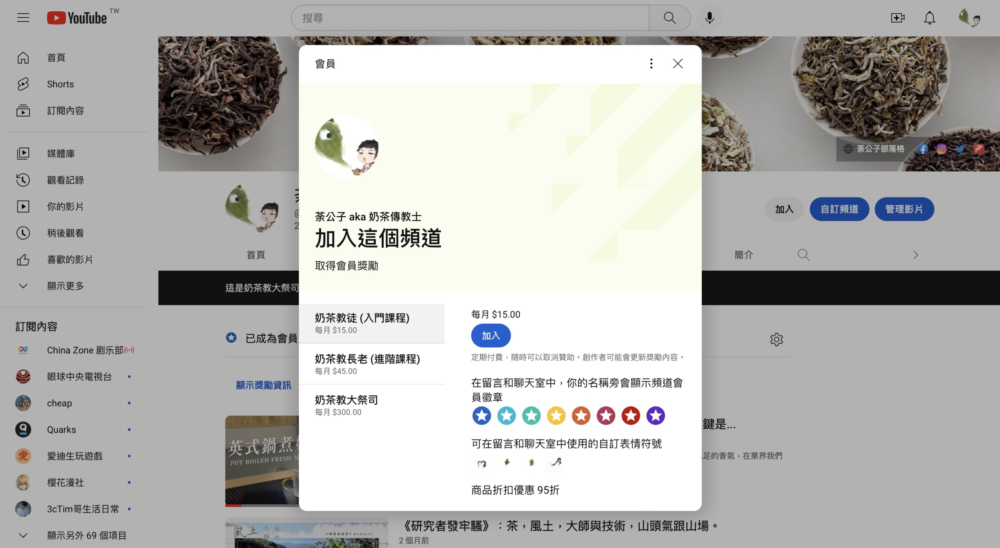

茶怎麼泡才好喝？原來專家也會用，辦公室的懶人泡茶法

入門者選茶包
在辦公室想泡杯茶喝，一不小心就又苦又澀嗎？泡茶方法百百種，行家說的頭頭是道，但對「新茶世代」來說，到底怎樣才能輕鬆快速地的享受一杯好茶呢？
專家也會用的沖泡小技巧，這篇文章幫助你完成！
不過在泡茶之前，別忘了先了解手裡的茶包喔。
你今天喝的是花香張揚的花果茶，還是經典柑橘風味的伯爵茶呢，或是早上清爽提神的早餐茶呢？
熟知茶包特性
大部分的茶包都使用碎形茶葉，搭配花、果乾，或以其他薰香方式賦予茶包獨特的香氣與口味，認識世界各式各樣的茶包
因此在沖泡上有兩點要注意：
知道了茶包的沖泡特性之後，答案就呼之欲出了！答案就是
加倍沖時間短
茶量加倍，快速沖泡
正規的溯源到茶藝界近十年的流行，把茶量加倍，加倍，再加倍，用多大量的茶，換取最高級的滋味體驗。
用一包茶包，泡一壺茶，需要的時間比較長，容易浸泡太久，於是讓茶容易苦澀，
沖泡後快快取出茶包，保證給你香氣飽滿霸道的一杯茶，雖然會損失茶的尾韻跟厚度，但也強化了香氣、甜度，
還有什麼比一杯香甜不苦澀的茶，更能撫平工作時的煩心呢？
建議比例與時間
一般茶包每包大約2-3克，按照普通茶葉沖泡的比例1:100，適合以200-300 ml的水沖泡5分鐘，
大約就是一杯馬克杯的容量。建議可以調整如下：
“Ｘ” （標準泡法，容易苦澀，風味完整）
1包茶包:300ml水 / 5分鐘
“Ｏ” （快速沖泡，前香飽滿，絕不失敗）
3包茶包:500 ml水 / 1分鐘
快速沖泡可減少浸泡時間，大幅降低茶葉浸泡苦澀的風險，
但我們可以再進一步避免高溫沖泡：「先裝熱水，再下茶包」
準備的注意事項
一把順手的茶壺
材質和形式不拘，玻璃的好看又便宜，是入門辦公室泡茶的好選擇（容量通常介於500ml-1000ml）
熱水哪裡來？
開飲機有熱水就ok了，但因為一次沖泡要用不少水，要評估一下，最好能夠準備自己的快煮壺最方便
時間跟置茶量呈反比
茶葉/茶包用得越多，需要時間越少
信賴你的眼睛和嗅覺
茶到底怎樣算是泡好了？這個問題雖然沒有標準答案，
但是多數茶包，如果泡出的茶成色透亮鮮豔，聞起來芳香撲鼻，沒有水味、厚重木頭味，
通常都會十分好喝，簡單來說就是看起來聞起來好喝的茶，喝起來一定也是啦！
當然，你可以適當調整，找出自己最喜歡的風格和濃度。
降溫泡茶的影響
降溫泡茶可以降低「失敗」風險，也是能凸顯茶的甜度的小訣竅、小技巧，
但高溫沖茶還是比較香，所以這樣的作法畢竟犧牲掉的是高揚的香氣，
在香氣、甜味、苦澀（失敗率）之間，就是個人的取捨了。
儘管挑選你最舒適的泡茶方法，泡一杯能讓自己舒緩心情的茶，就是最好的茶了！
沖泡茶適合的溫度參考
- 100度：經典的溫度，前輩追求的純粹茶香
- 95度：勇者的溫度，苦澀物質會大量釋出，需要解酒或失戀的時候可以試試
- 90度：最適合茶包沖泡的溫度，香氣充足
- 85度：香氣略顯不足，甜味比較明顯，沖泡時間要稍微拉長
- 70度（或以下）：無法展現茶的滋味，如果是薰香茶會剩下香料、其他香氛味，強烈不建議
辦公室控制溫度的疑惑
有些飲水機沒有顯示溫度，或者顯示的溫度和實際水溫有落差，那該怎麼辦呢？
我們可以透過先沖熱水，再下茶包的方式，避免滾燙的水直接沖到茶葉造成的苦澀，
一般即使顯示100度的開飲機，沖出來的熱水水溫也大約93度左右，沖到茶壺中又會降溫3-5度，
所以這樣的做法可以很好的確保水溫不會過高、細碎的茶葉不會因高溫釋出過多苦澀物質。
會不會浪費茶？
茶，只要泡了，喝了都不浪費「浪費是買了供奉在櫥櫃裡，放到忘記才是真正的浪費。」
若是喝茶包的朋友更不用怕，一包普通茶包若不貴，可能5-10元你能搞定，
就算放了整整三包，不過就是30元不到，
現在要買杯好喝的手搖飲，這個價格可能都有困難，這個概念同樣在傳統的工夫茶也適用。
- 縮短時間換取最大的滋味
- 茶包很便宜不用省
- 泡兩次沒味道可以丟了
請贊助荼公子創作
目前初步並沒什麼募資頁面，但會持續把泡法們做出來，
若是小額贊助可以先在Youtube黃金會員，以訂閱方式
先提供小額支持我們創作組經費！
或是至『跟著公子買茶茶』以購買茶葉方式提供贊助費用。
